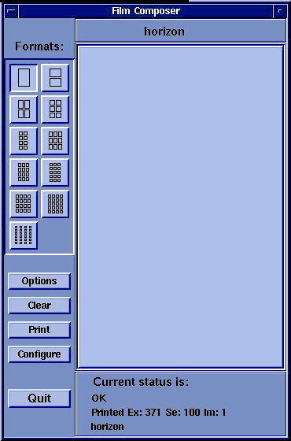
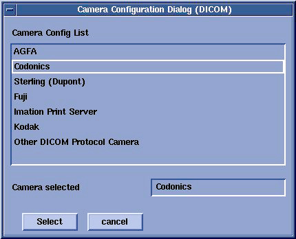
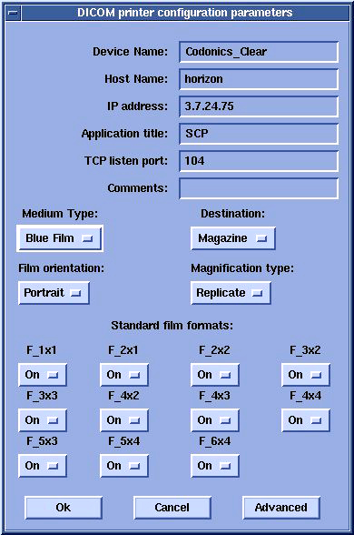
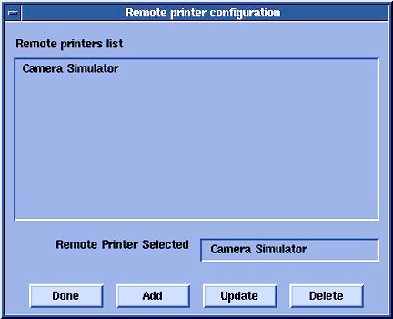
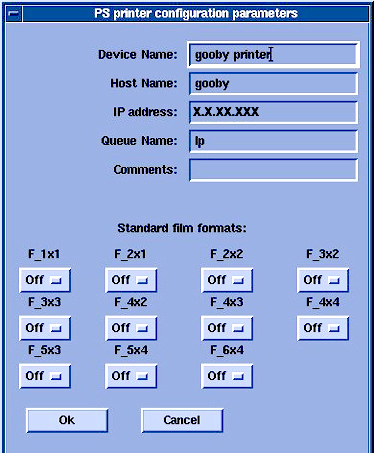

Operating Documentation
Direction 5133330-3, Rev# 14
Signa EXCITE HD 3.0T Service Methods
Module Version 1.0, Version Date 4/27/07
Operating Documentation |
| Required Persons | Preliminary Reqs | Procedure | Finalization |
|---|---|---|---|
| 1 | Not Applicable | 25 mins | Not Applicable |
With the HDMR 12.0 release, the Film Composer now supports DICOM Color printing. If your paper printer supports DICOM Color, you will want to use DICOM as opposed to Postscript format. The setup for DICOM greyscale and color paper is identical—the printer and scanner will determine if the image is color or grayscale and set elements in the DICOM header appropriately. In the Film Composer setup, you need to select the appropriate media type (paper) and film size. There is no explicit configuration for color versus grayscale.
Boot Signa to Application level.
From the Browser select Film Composer on the right side on the menu.
Select [Configure] option on the Film Composer GUI. See Illustration 1,
Illustration 1: Film Composer GUI

Click [Add].
A new GUI will appear called “Type of Laser Camera”. Click [DICOM.].
A list of possible printers will appear. Select the printer being used. See Illustration 2.
Illustration 2: Camera Configuration

After selecting the camera, the [Configuration GUI] will appear. Fill in necessary information. For the Codonics Printer see Table 1. Also see Illustration 3.
Table 1: Codonics Printer Configuration Values
| Parameter | Value |
| Device name | Codonics_Clear |
| Hostname | horizon |
| IP address | See network administrator |
| AE title | SCP |
| Port | 104 |
| Film type can be Clear Film, Blue Film, or Paper | |
| NOTE: | Contact camera vendors for other printer types. |
Illustration 3: Codonics Printer Parameters

| NOTE: | Paper size can be selected by clicking on the “Advanced” option. |
Boot Signa to Application level.
From the Browser select [Film Composer] on the right side on the menu.
Select [Configure] option on the Film Composer GUI. See Illustration 4.
Illustration 4: Film Composer
Click [Add] option from the Remote printer configuration GUI. See Illustration 5.
Illustration 5: Remote Printer Configuration

Then select Postscript camera to be configured.
Enter the applicable information in the PS printer configuration parameters GUI. See Illustration 6.
Illustration 6: Printer Configuration Parameters

Click [OK] to complete the camera configuration.
After camera configuration, create a test film to ensure the system is working before customer turnover.